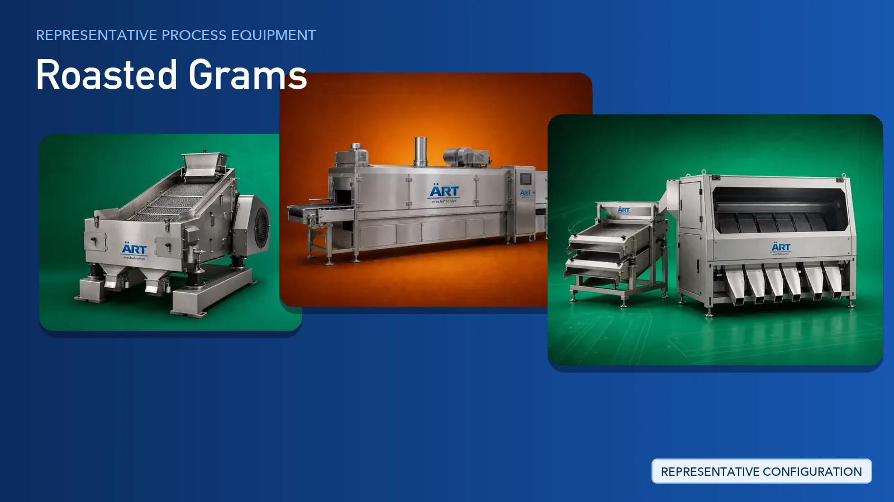

Roasted Gram Plant & Machinery Solutions (Roasted Chana Processing Line)
Roasted gram — widely known as roasted chana or bhuna chana — is a popular roasted snack and cooking ingredient consumed across South Asia, the Middle East and export markets, sold plain, salted, masala-coated or as split roasted gram.

About Roasted Grams processing
ART Mechatronics provides complete turnkey solutions for roasted gram processing plants, covering cleaning and de-stoning, roasting, cooling, grading, flavouring and automated packing. Our systems are engineered for continuous operation, consistent product quality, effective dust control and hygienic food-grade construction suitable for domestic and export production.
Complete Roasted Gram Process Flow
Raw gram is received in bags or in bulk, tipped into the intake system and freed of straw, husk, string and oversized foreign matter.
Ensures a steady, controlled feed to the cleaning line.
Gram is cleaned of dust and light impurities, separated from stones and mud balls, and checked for metal contamination before roasting.
Ensures:
- Removal of stones, dust and light impurities
- Protection of downstream machinery
- Food-safe, contamination-free input
Cleaned gram is roasted under controlled heat to develop colour, crunch and the characteristic roasted aroma.
Delivers:
- Uniform roasting across the batch
- Consistent colour and texture
- Controlled moisture reduction
Roasted gram is cooled in a controlled manner so that residual heat does not affect texture, coating or the finished pack.
Prevents condensation inside packs.
Cooled product is graded by size and inspected for discoloured, broken or defective grains, while loose skin and husk are aspirated away.
Ensures uniform grade and clean product appearance.
Salt, spice blends, oil or masala coatings are applied and distributed evenly across the roasted gram.
Supports:
- Plain and salted variants
- Masala and spice-coated variants
- Uniform flavour distribution
Finished product is weighed, filled, sealed, coded and inspected for retail and bulk formats.
Suitable for retail pouches, jars and bulk packs.
Dust released at intake, cleaning, grading and packing points is captured at source by:
Machinery Required for Roasted Gram Plant
- Bag Dump Station & Intake Hopper
- Pre-Cleaner
- Air Screen Cleaner
- Air Aspirator
- De-Stoner
- Gravity Separator
- Magnetic Separator
- Bucket Elevator & Screw Conveyor
- Roaster
- Hot Air Generator
- Cooling Conveyor
- Grader & Sifter
- Color Sorter
- Coating Pan Mixer
- Ribbon Mixer
- Multi Head Weigher
- Vertical Form Fill Seal (Vffs)
- Metal Detector & Checkweigher With Printer
- Dust Collector Machine
Turnkey Roasted Gram Plant Solutions
ART Mechatronics offers complete turnkey solutions for roasted gram processing plants, including:
- Process design & plant layout
- Cleaning, de-stoning and grading systems
- Roasting and cooling systems
- Flavouring and coating systems
- Automation & control panels
- Dust collection and pollution control
- Packaging line integration
- Installation & commissioning
- After-sales support
We customize solutions based on:
- Product variant (plain, salted, masala-coated, split gram)
- Production capacity
- Roasting and cooling requirements
- Level of automation
- Packaging format
Why Choose ART Mechatronics for Roasted Gram
- Expertise in grain and pulse cleaning, roasting and snack lines
- Controlled roasting and cooling technology
- Hygienic food-grade machinery design
- Integrated dust control across the plant
- Consistent product quality batch after batch
- Complete plant engineering under one roof
- Global export capability
Where it's used
Get pricing & specs for the Roasted Grams plant
Share the product, target capacity, current process and plant location. These details help our engineers discuss the right machine or line configuration.
One partner, from design to start-up
ART Mechatronics designs, manufactures, installs and commissions your Roasted Grams plant solution with regional presence in India, UAE and Thailand.